ポイ捨て跡
道端に落ちてたものの中から芸術点が高いものを写真に収めました。
どこにでもあるようなごみをただごみとして見るのではなく何かを感じ取ることがあなたの生活をよりよくするでしょう。
しかしごみはごみです。
溶けたゴムのごみ
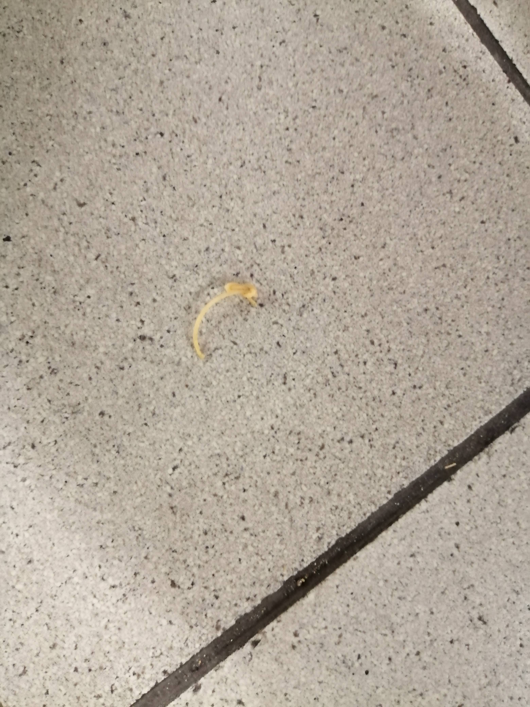某駅で折り畳み傘とかについてる柔らかいゴムが溶けたものが落ちていた。
このタイプのものに限らずゴムは溶けるとべとべとして周りにくっつくのが厄介である。
この日は昼にカレーを食べた。
たばこのごみ
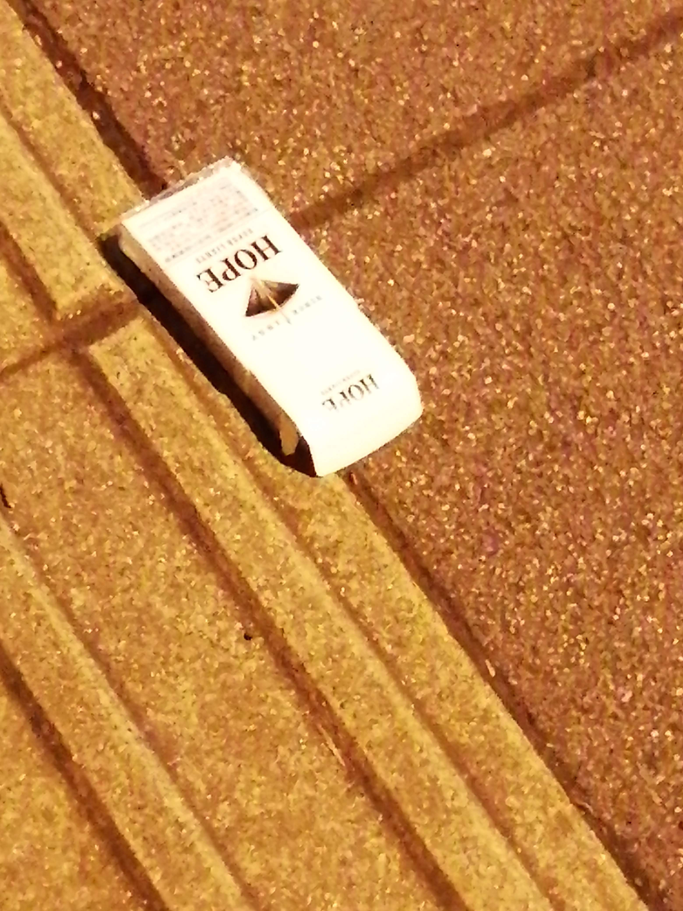どこに落ちていたか覚えていないがたばこの空き箱が落ちていた。
これに関してはどこにでもあるようなごみであり芸術性も感じなかった。
個人的には飲み物のごみとたばこのごみがポイ捨て界の二大巨頭であると考えている。
ホッカイロのごみ
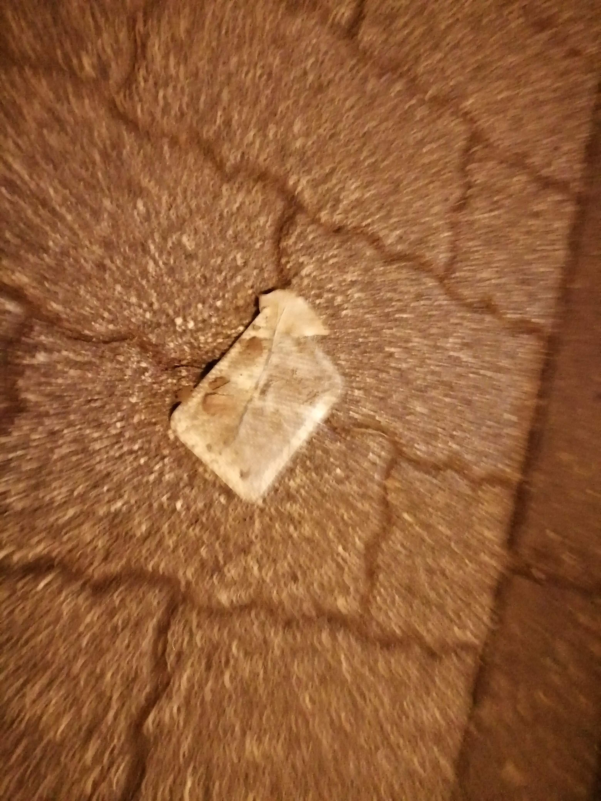某駅付近の飲食店が並ぶ道に落ちていたホッカイロのごみ。
2月下旬ということもあり季節感を感じることができるため撮影に至った。
貼るタイプのホッカイロは最初の粘着力は以上に強いが一度衣服等に貼り付けた後はかなり弱まるためうっかり落としてしまっただけかもしれない。
この日は晩にハンバーガーを食べた。
ちくわのごみ
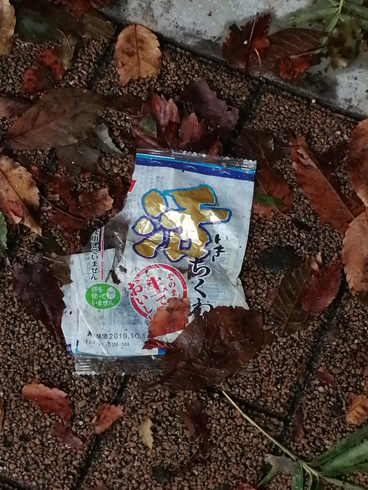某大学付近の道に落ちていた活ちくわのごみ。
ただのちくわではなく活ちくわであるので他とは活きが違う。
歩きながらちくわを貪るようなちくわ狂人(くるいびと)がポイ捨てをしたのだろう。
千円ガチャ付近のごみ
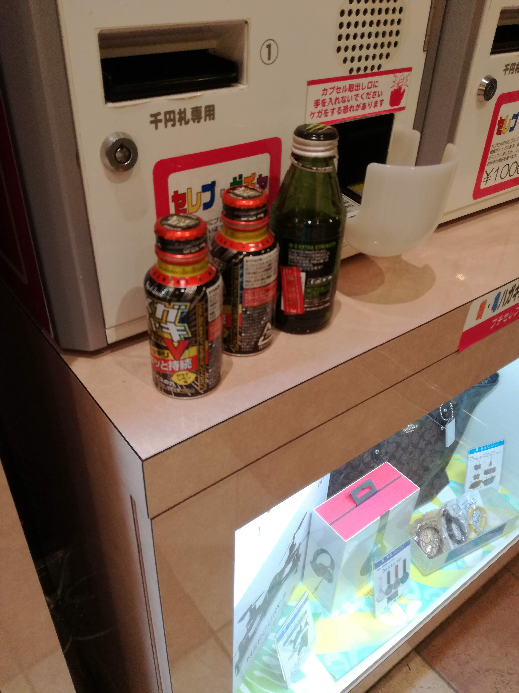某サービスエリアの千円ガチャ付近にあったごみ。
長距離ドライバー達が飲んだものをここに置いただけであるとは思うが見事に千円ガチャの限界感を表している。
ここのサービスエリアはカレーとラーメンが私の理想形に近い形で提供されているので気に入っている。好きな場所ランキングではTOP5には入る。
トイレに置かれていたごみ
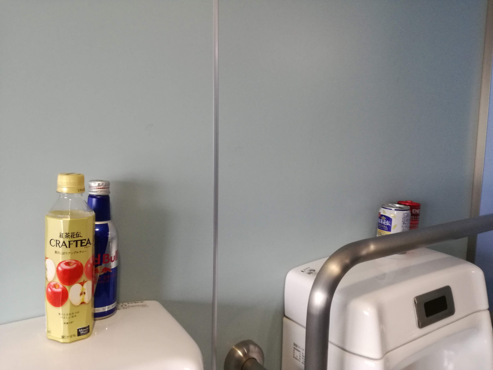某大学のトイレに置かれていたごみ。
中身がぶちまけられていないのが意外だった。
ちなみに近くにゴミ箱はあった。
中身が残った飲料のごみ
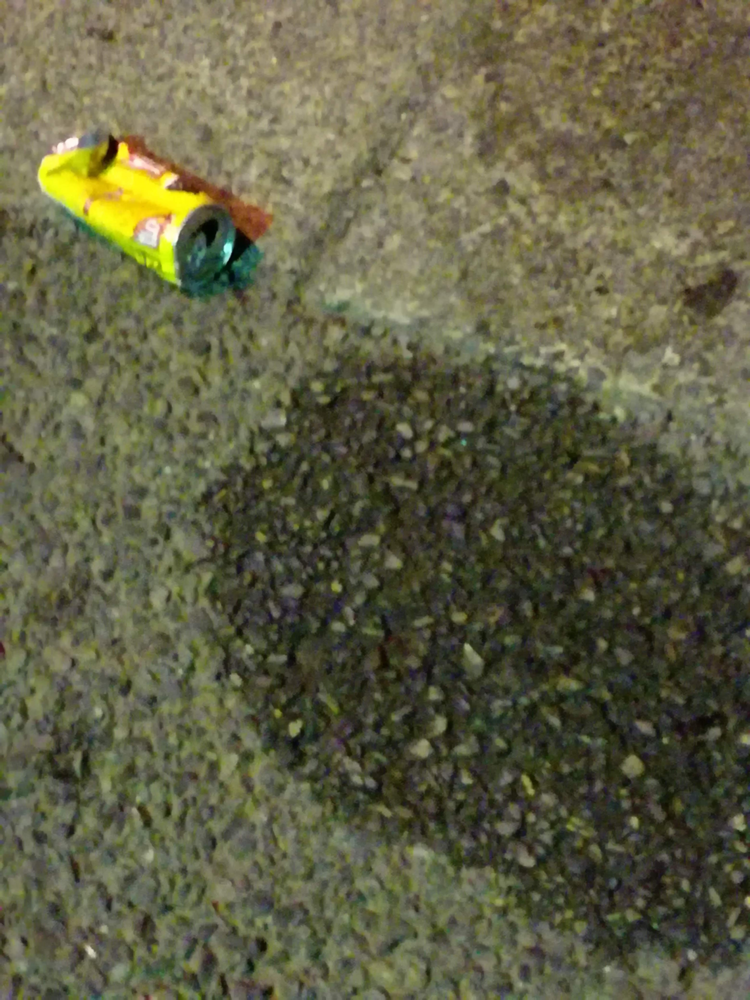某所のTSUTAYA付近にあった中身が残っていた飲料のごみ。
疲れているときに無意識に撮ったものなので特に語ることはない。写真を見る限りデカビタの缶のようだ。
江の島のごみ
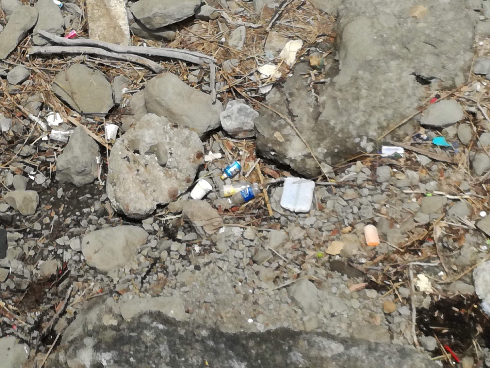江の島に落ちていたごみ。
割と有名な観光地であるためやはりごみは多い。ごみが落ちている場所自体は一般人は入れないので、うっかり手を滑らせて落としてしまったものもあるだろう。
この日は昼にカレーを食べた。
市街地に落ちていたごみ
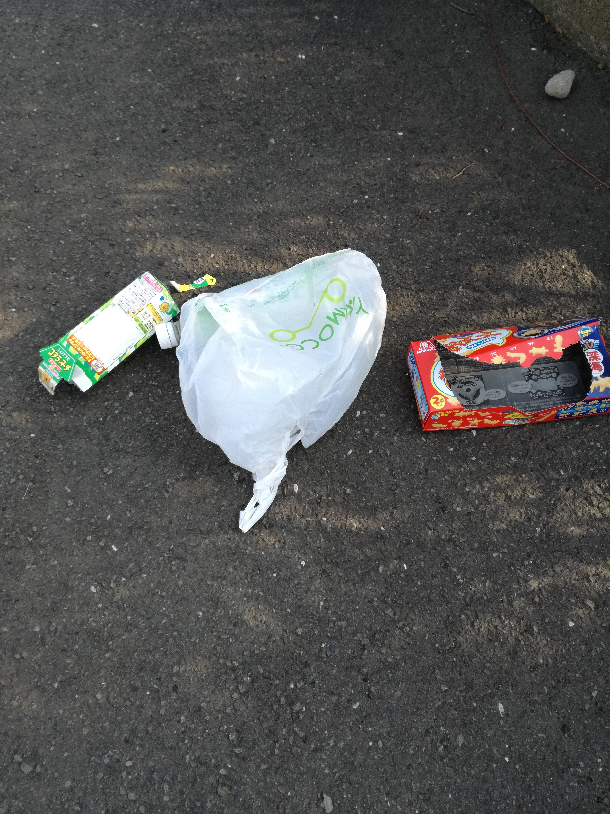市街地に落ちていたおっとっとやコアラのマーチのごみ。
今のところ私の一番のお気に入りである一枚。今見ても何がいいのかは分からないがやはりお気に入りである。
どっちかというとおっとっとの方が好き。
潰れた缶飲料のごみ
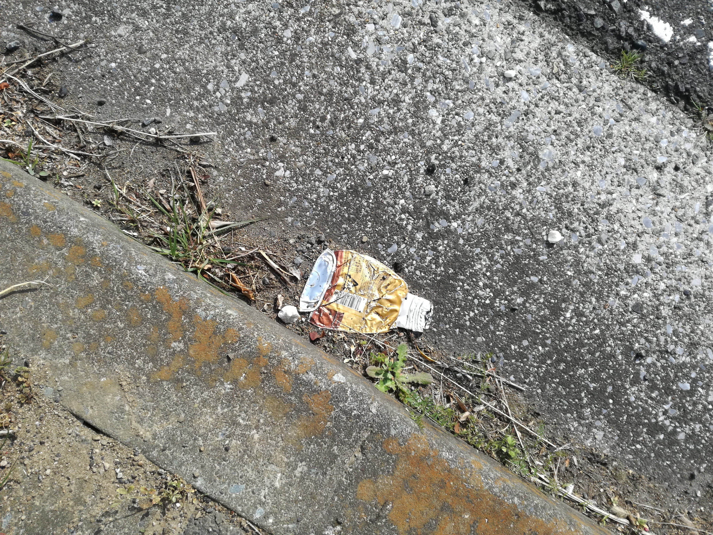市街地に落ちていた潰れた缶飲料のごみ。
見事なまでに薄っぺらである。アルミではなくスチールだったらもっとポイントが加算されていた。
この日の昼ごはんはからあげとイチゴアイスだった。
うまい棒のごみ
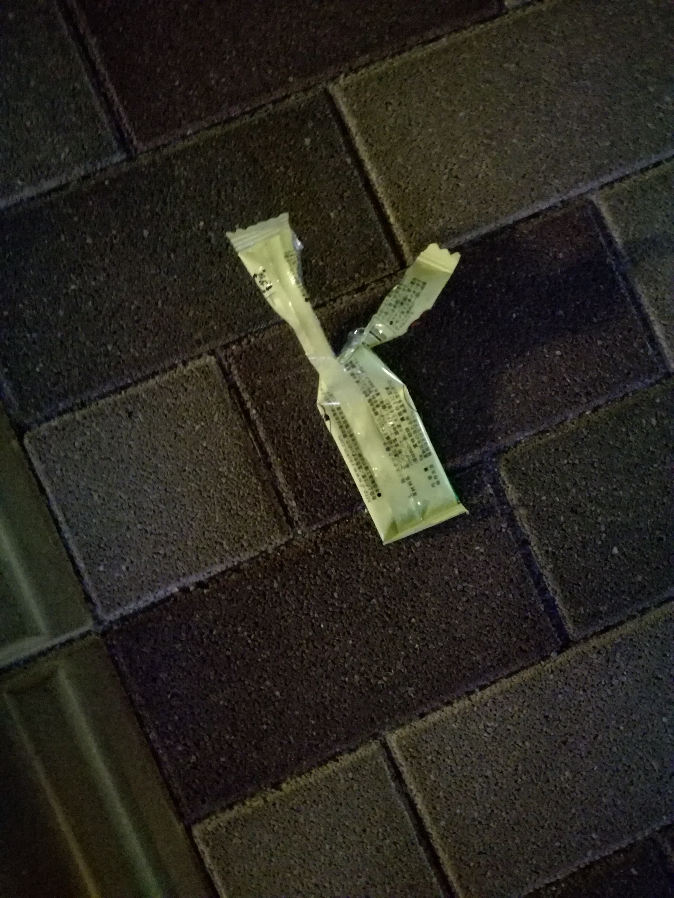うまい棒のごみ。
みんな大好きコンポタージュ味である。個人的にかつてはたこ焼き味の一強だったが最近サラミ味に目覚めた。